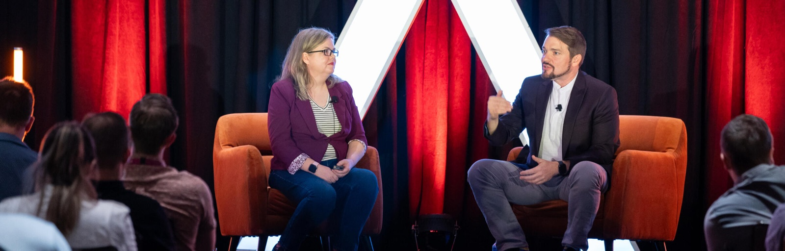
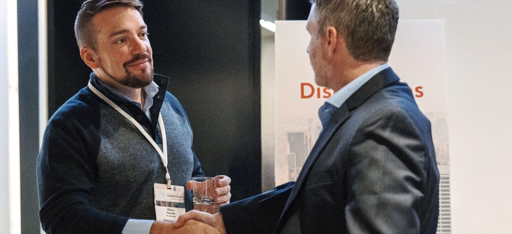

Strategy
Clear digital roadmaps, prioritization, budget tradeoffs, vendor evaluation, and leadership support for teams that need traction without theatre.
Digital strategy, systems, and community-first growth
Pirrotta Consulting helps organizations solve expensive, messy, traditionally hard business problems with practical digital strategy, smarter systems, AI-aware workflows, better user experience, and responsible technology.
Practical first
The work sits at the intersection of brand, community, e-commerce, operations, and technology. That means fewer abstract decks and more usable systems, sharper customer paths, clearer digital presence, and decisions that make sense for the actual team that has to run them.
What we do
Clear digital roadmaps, prioritization, budget tradeoffs, vendor evaluation, and leadership support for teams that need traction without theatre.
Customer journeys, merchandising, conversion paths, audience development, and fan-focused growth for brands with passionate buyers.
Responsible AI use, LLMO, internal workflow redesign, prompts and process standards, and decision support that fits real operational limits.
Interface reviews, content structure, accessibility, service flows, and digital experiences that reduce friction for customers and staff.
Audience strategy for pop culture, entertainment, collectibles, memberships, loyalty, donors, students, fans, and families.
Lean tools, automation, documentation, and practical technology choices for nonprofits, schools, churches, and small teams.

25+ years of experience
Brand growth, digital commerce, community engagement, operational risk, budget oversight, and leadership all tend to collide. The value is seeing those pieces together and designing a path a real team can execute.
Who we help
Companies built around identity, taste, enthusiasm, collecting, membership, loyalty, and word-of-mouth.
Teams that need better operations and clearer technology without enterprise software overhead.
Organizations serving members, families, volunteers, donors, and neighborhoods with limited administrative capacity.
Fan-focused businesses that need smarter digital systems, sharper experience, and sustainable growth.
Community cost-saving systems
Many schools, nonprofits, churches, and local organizations get pushed into expensive SaaS platforms, messy spreadsheets, outdated workflows, or manual processes that drain staff time.
Pirrotta Consulting helps design practical, lower-cost digital solutions around the real need. The goal is not technology for technology's sake. The goal is saving time, reducing cost, and helping more money go back to students, families, members, fans, donors, and the community.
Why it works

Common questions
Digital strategy, operational systems, AI-aware workflows, LLMO, SEO, e-commerce growth, UX, and community engagement.
Passion-driven brands, pop culture and entertainment businesses, e-commerce teams, nonprofits, schools, churches, community groups, and small teams with practical constraints.
By replacing manual work, reducing software waste, choosing right-sized tools, and designing systems that fit the team instead of forcing the team around the tool.
Yes, where it helps. The focus is responsible use, clearer workflows, better retrieval and content structure, and simple guardrails people can actually follow.
Get in touch
No contact form for now. Use the channel that is easiest and include the problem, the team, and what feels too expensive, slow, or hard to manage today.